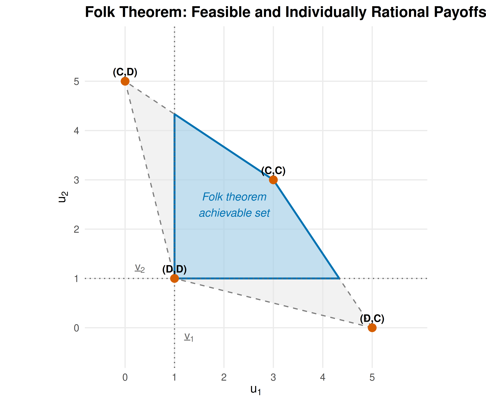

8 Repeated Games
How repetition transforms strategic interaction. Covers finite and infinite horizon repeated games, discount factors, the folk theorem, and trigger strategies including Grim Trigger and Tit-for-Tat, with a worked example showing how cooperation can be sustained in the infinitely repeated Prisoner’s Dilemma.
Learning objectives
- Distinguish between finitely and infinitely repeated games and explain the role of the discount factor.
- State the folk theorem and characterize the set of feasible and individually rational payoffs.
- Describe Grim Trigger and Tit-for-Tat strategies and derive the conditions under which they sustain cooperation.
- Plot the folk-theorem payoff region for a given stage game in R and verify trigger-strategy equilibria computationally.
8.1 Motivation
The Prisoner’s Dilemma has a famously bleak prediction: rational players defect, even though mutual cooperation would make both better off. Yet in the real world, firms competing in the same market quarter after quarter often sustain tacit collusion. Nations locked in arms races sometimes reach stable agreements. Individuals in small communities cooperate routinely without binding contracts.
What changes when a game is played not once, but repeatedly? Repetition introduces the possibility of punishment: a player who defects today can be punished tomorrow. If the future matters enough — that is, if the discount factor is sufficiently high — the threat of future punishment can sustain cooperation as an equilibrium outcome. This is the central message of the folk theorem, one of the most powerful results in game theory.
Robert Axelrod’s celebrated computer tournaments (Axelrod, 1981) demonstrated this insight empirically: Tit-for-Tat, a simple strategy that cooperates initially and then mirrors the opponent’s previous action, emerged as the tournament winner, outperforming far more sophisticated strategies. We revisit Axelrod’s tournament in 18; here we lay the theoretical foundations.
8.2 Theory
8.2.1 The stage game
A repeated game is built on a stage game \(G = (N, (A_i), (u_i))\) played in each period \(t = 0, 1, 2, \ldots\) The stage game we use throughout this chapter is the Prisoner’s Dilemma with the following payoff matrix:
| C | D | |
|---|---|---|
| C | (3, 3) | (0, 5) |
| D | (5, 0) | (1, 1) |
Here \(T = 5\) is the temptation payoff, \(R = 3\) the reward for mutual cooperation, \(P = 1\) the punishment for mutual defection, and \(S = 0\) the sucker’s payoff, satisfying the standard ordering \(T > R > P > S\).
8.2.2 Finite vs. infinite horizon
In a finitely repeated game with \(T\) periods, backward induction unravels cooperation: in the last period, defection is dominant (just as in the one-shot game). Knowing this, both players defect in period \(T - 1\), and so on, all the way back to period 1. The unique subgame-perfect equilibrium of the finitely repeated Prisoner’s Dilemma is defection in every period.
In an infinitely repeated game, there is no last period, so backward induction cannot get started. Players evaluate infinite payoff streams using the discount factor \(\delta \in [0, 1)\). The discounted average payoff from a stream \((u_0, u_1, u_2, \ldots)\) is:
\[\begin{equation} V = (1 - \delta) \sum_{t=0}^{\infty} \delta^t u_t \tag{8.1} \end{equation}\]
The factor \((1 - \delta)\) normalizes the sum so that a constant stream \(u_t = c\) yields \(V = c\), making payoffs comparable to the stage game.
8.2.3 Trigger strategies
A trigger strategy prescribes cooperation as long as no player has deviated, and switches permanently (or temporarily) to a punishment phase after a deviation.
- Grim Trigger: Cooperate in the first period. In each subsequent period, cooperate if and only if both players have cooperated in every previous period. Any single defection triggers permanent mutual defection.
- Tit-for-Tat (TFT): Cooperate in the first period. In each subsequent period, play whatever the opponent played in the previous period. TFT punishes defection but forgives it after one period — a feature that proved remarkably effective in Axelrod (1981)’s tournament.
8.2.4 The Grim Trigger condition
Under Grim Trigger, the cooperative payoff stream is \(R, R, R, \ldots\) with discounted value \(V_C = R = 3\). If a player deviates in period \(t\), she earns \(T = 5\) in that period but triggers permanent defection, earning \(P = 1\) forever after. The deviation payoff is:
\[\begin{equation} V_D = (1 - \delta) \left[ T + \sum_{s=1}^{\infty} \delta^s P \right] = (1 - \delta) T + \delta P \tag{8.2} \end{equation}\]
Cooperation is sustainable when \(V_C \geq V_D\):
\[\begin{equation} R \geq (1 - \delta) T + \delta P \quad \Longleftrightarrow \quad \delta \geq \frac{T - R}{T - P} \tag{8.3} \end{equation}\]
For our payoffs: \(\delta \geq \frac{5 - 3}{5 - 1} = \frac{1}{2}\).
8.2.5 The folk theorem
Theorem: Folk Theorem (Friedman, 1971)
Let \(G\) be a finite stage game and let \(v = (v_1, \ldots, v_n)\) be any feasible payoff vector that strictly dominates each player’s minimax payoff \(\underline{v}_i\). Then for sufficiently large \(\delta < 1\), there exists a subgame-perfect equilibrium of the infinitely repeated game with average payoff \(v\).
The folk theorem tells us that repetition with patient players can sustain any feasible, individually rational payoff profile — a dramatic expansion of the equilibrium set compared to the one-shot game. The set of achievable payoffs forms a convex polytope bounded by feasibility (the convex hull of stage-game payoff profiles) and individual rationality (each player earns at least their minimax value). See Osborne (2004, Chapter 14) for the formal proof.
8.3 Implementation in R
8.3.1 Stage game setup and Grim Trigger analysis
# Stage game payoffs (Prisoner's Dilemma)
T_payoff <- 5 # temptation
R_payoff <- 3 # reward
P_payoff <- 1 # punishment
S_payoff <- 0 # sucker
# Critical discount factor for Grim Trigger
delta_star <- (T_payoff - R_payoff) / (T_payoff - P_payoff)
cat(sprintf("Critical discount factor (Grim Trigger): delta* = %.4f\n",
delta_star))#> Critical discount factor (Grim Trigger): delta* = 0.50008.3.2 Payoff comparison across discount factors
# Compare cooperation vs deviation payoffs for a range of delta
delta_seq <- seq(0.01, 0.99, by = 0.01)
payoff_data <- tibble(
delta = delta_seq,
cooperate = R_payoff,
deviate = (1 - delta_seq) * T_payoff + delta_seq * P_payoff
)
payoff_long <- payoff_data |>
pivot_longer(cols = c(cooperate, deviate),
names_to = "strategy", values_to = "payoff") |>
mutate(strategy = str_to_title(strategy))
cat("Cooperation payoff (constant):", R_payoff, "\n")#> Cooperation payoff (constant): 3#> Deviation payoff at delta = 0.3: 3.8#> Deviation payoff at delta = 0.7: 2.28.3.3 Folk theorem payoff region
# All pure-strategy payoff profiles in the stage game
profiles <- tibble(
p1_action = c("C", "C", "D", "D"),
p2_action = c("C", "D", "C", "D"),
u1 = c(R_payoff, S_payoff, T_payoff, P_payoff),
u2 = c(R_payoff, T_payoff, S_payoff, P_payoff)
)
cat("Stage-game payoff profiles:\n")#> Stage-game payoff profiles:
print(profiles)#> # A tibble: 4 × 4
#> p1_action p2_action u1 u2
#> <chr> <chr> <dbl> <dbl>
#> 1 C C 3 3
#> 2 C D 0 5
#> 3 D C 5 0
#> 4 D D 1 1
# Minimax payoffs (in PD, minimax = punishment payoff)
minimax_1 <- P_payoff
minimax_2 <- P_payoff
cat(sprintf("\nMinimax payoffs: v1 = %d, v2 = %d\n", minimax_1, minimax_2))#>
#> Minimax payoffs: v1 = 1, v2 = 18.3.4 Publication figure: folk theorem payoff region
# Convex hull of feasible payoffs
feasible_hull <- profiles |>
select(u1, u2) |>
as.matrix()
hull_idx <- chull(feasible_hull)
hull_points <- feasible_hull[c(hull_idx, hull_idx[1]), ]
hull_df <- as_tibble(hull_points, .name_repair = ~ c("u1", "u2"))
# Individually rational and feasible region
# Intersection of feasible set with u1 >= 1 and u2 >= 1
# The feasible polygon vertices are (3,3), (0,5), (5,0), (1,1)
# Clipping to u1 >= 1 and u2 >= 1 yields vertices:
ir_vertices <- tibble(
u1 = c(1, 1, 3, 5, 4),
u2 = c(4, 1, 3, 0, 1)
)
# More precisely, find the individually rational feasible set
# The feasible set edges: (0,5)-(3,3), (3,3)-(5,0), (5,0)-(1,1), (1,1)-(0,5)
# Clipping with u1 >= 1: edge (0,5)-(1,1) at u1=1 gives u2 between 1 and 5
# edge (0,5)-(3,3) at u1=1 gives u2 = 5 - (2/3)*1 = 5 - 2/3 = 13/3
# Clipping with u2 >= 1: edge (5,0)-(1,1) at u2=1 gives u1=1
# edge (5,0)-(3,3) at u2=1 gives u1 = 5 - (5/3)*1 = ... no.
# Let's compute properly.
# Feasible set is convex hull of (3,3), (0,5), (5,0), (1,1)
# The IR region clips this with u1 >= 1, u2 >= 1
# Since (1,1) is already a vertex and all other vertices except (0,5) have u1>=1
# and all except (5,0) have u2>=1, the clipping is:
# Edge from (0,5) to (3,3): parametrically (3t, 5-2t) for t in [0,1]
# u1 = 1 => t = 1/3, u2 = 5 - 2/3 = 13/3
# Edge from (0,5) to (1,1): parametrically (t, 5-4t) for t in [0,1]
# u1 = 1 => t = 1, giving (1,1) -- that's the endpoint
# Edge from (5,0) to (3,3): parametrically (5-2t, 3t) for t in [0,1]
# u2 = 1 => t = 1/3, u1 = 5 - 2/3 = 13/3
# Edge from (5,0) to (1,1): parametrically (5-4t, t) for t in [0,1]
# u2 = 1 => t = 1, giving (1,1)
ir_region <- tibble(
u1 = c(1, 1, 3, 13/3, 1),
u2 = c(1, 13/3, 3, 1, 1)
)
# Key labeled points
key_points <- tibble(
u1 = c(R_payoff, P_payoff, T_payoff, S_payoff),
u2 = c(R_payoff, P_payoff, S_payoff, T_payoff),
label = c("(C,C)", "(D,D)", "(D,C)", "(C,D)")
)
p_folk <- ggplot() +
geom_polygon(data = hull_df, aes(x = u1, y = u2),
fill = "grey90", colour = "grey50",
linetype = "dashed", alpha = 0.5) +
geom_polygon(data = ir_region, aes(x = u1, y = u2),
fill = okabe_ito[2], alpha = 0.3,
colour = okabe_ito[5], linewidth = 0.8) +
geom_hline(yintercept = minimax_2, linetype = "dotted",
colour = "grey40") +
geom_vline(xintercept = minimax_1, linetype = "dotted",
colour = "grey40") +
geom_point(data = key_points, aes(x = u1, y = u2),
size = 3, colour = okabe_ito[6]) +
geom_text(data = key_points, aes(x = u1, y = u2, label = label),
vjust = -0.8, size = 3.2, fontface = "bold") +
annotate("text", x = 2.2, y = 2.5,
label = "Folk theorem\nachievable set",
colour = okabe_ito[5], size = 3.5, fontface = "italic") +
annotate("text", x = 0.3, y = minimax_2 + 0.2,
label = expression(underline(v)[2]),
colour = "grey40", size = 3.5) +
annotate("text", x = minimax_1 + 0.3, y = -0.2,
label = expression(underline(v)[1]),
colour = "grey40", size = 3.5) +
scale_x_continuous(name = expression(u[1]),
limits = c(-0.5, 5.8), breaks = 0:5) +
scale_y_continuous(name = expression(u[2]),
limits = c(-0.5, 5.8), breaks = 0:5) +
coord_fixed() +
labs(title = "Folk Theorem: Feasible and Individually Rational Payoffs") +
theme_publication()
p_folk
Figure 8.1: The set of achievable payoffs under the folk theorem for the Prisoner’s Dilemma. The outer polygon (light fill) shows the feasible set — the convex hull of stage-game payoff profiles. The shaded interior region represents payoff pairs that are both feasible and individually rational (each player earns at least their minimax payoff of 1). Any point in the shaded region can be sustained as a subgame-perfect equilibrium for sufficiently high discount factor.
save_pub_fig(p_folk, "folk-theorem-region")8.4 Worked example
We verify step by step that Grim Trigger sustains cooperation in the infinitely repeated Prisoner’s Dilemma when \(\delta = 0.6\).
Step 1: Define the stage game. The payoffs are \(T = 5\), \(R = 3\), \(P = 1\), \(S = 0\) as defined above.
Step 2: Specify the strategy. Both players use Grim Trigger: cooperate initially, and continue cooperating as long as no defection has occurred. After any defection, defect forever.
Step 3: Compute the cooperation payoff. On the equilibrium path, both players cooperate forever. The discounted average payoff is \(V_C = R = 3\).
Step 4: Compute the deviation payoff. A player who defects in period \(t\) earns \(T = 5\) in that period. From period \(t + 1\) onward, both players defect (Grim Trigger activated), earning \(P = 1\) per period. The discounted average payoff from deviation is:
\[V_D = (1 - 0.6) \cdot 5 + 0.6 \cdot 1 = 2.0 + 0.6 = 2.6\]
Step 5: Verify the equilibrium condition. Since \(V_C = 3.0 > 2.6 = V_D\), deviation is unprofitable. Grim Trigger is a subgame-perfect equilibrium for \(\delta = 0.6\).
delta <- 0.6
V_C <- R_payoff
V_D <- (1 - delta) * T_payoff + delta * P_payoff
cat(sprintf("Discount factor: delta = %.1f\n", delta))#> Discount factor: delta = 0.6#> Cooperation payoff (Grim Trigger): V_C = 3.0#> Deviation payoff: V_D = 2.6
cat(sprintf("Cooperation sustained? %s (V_C = %.1f %s V_D = %.1f)\n",
ifelse(V_C >= V_D, "YES", "NO"),
V_C, ifelse(V_C >= V_D, ">=", "<"), V_D))#> Cooperation sustained? YES (V_C = 3.0 >= V_D = 2.6)#>
#> Critical threshold: delta* = 0.5000
cat(sprintf("Current delta = %.1f %s delta* = %.4f\n",
delta, ifelse(delta >= delta_star, ">=", "<"), delta_star))#> Current delta = 0.6 >= delta* = 0.5000
# Summary table
grim_summary <- tibble(
Parameter = c("Discount factor (delta)", "Critical threshold (delta*)",
"Cooperation payoff (V_C)", "Deviation payoff (V_D)",
"Equilibrium?"),
Value = c(sprintf("%.1f", delta), sprintf("%.4f", delta_star),
sprintf("%.1f", V_C), sprintf("%.1f", V_D),
ifelse(V_C >= V_D, "Yes", "No"))
)
grim_summary |>
gt() |>
tab_header(title = "Grim Trigger Equilibrium Verification",
subtitle = "Infinitely Repeated Prisoner's Dilemma")| Grim Trigger Equilibrium Verification | |
| Infinitely Repeated Prisoner's Dilemma | |
| Parameter | Value |
|---|---|
| Discount factor (delta) | 0.6 |
| Critical threshold (delta*) | 0.5000 |
| Cooperation payoff (V_C) | 3.0 |
| Deviation payoff (V_D) | 2.6 |
| Equilibrium? | Yes |
8.4.1 Comparing Grim Trigger and Tit-for-Tat
Grim Trigger sustains cooperation through the harshest possible punishment: permanent defection. Tit-for-Tat, by contrast, punishes for only one period and then forgives. This makes TFT more robust in noisy environments (where actions are sometimes misperceived) but requires a higher discount factor to sustain cooperation against deliberate deviation. In Axelrod (1981)’s tournament, TFT’s combination of niceness (never defect first), retaliation (punish defection), forgiveness (return to cooperation), and clarity (simple to understand) proved devastatingly effective. We simulate the tournament in detail in 18.
8.5 Extensions
- Finite repetition with multiple equilibria. If the stage game has multiple Nash equilibria (4), cooperation can sometimes be sustained even in finitely repeated games by using equilibrium selection as a reward-and-punishment device.
- Imperfect monitoring. When players observe only noisy signals of each other’s actions, the analysis becomes substantially more complex. The folk theorem still holds under certain conditions, but strategies must be adapted to tolerate observation errors.
- Stochastic games. When the stage game itself changes over time (e.g., market conditions fluctuate), the analysis extends to stochastic games, a generalization of repeated games.
- Evolutionary dynamics. Axelrod’s tournament approach connects repeated games to evolutionary game theory, where strategies compete and reproduce based on fitness. This perspective is developed further in 18.
For the formal treatment of the folk theorem and its variants, see Osborne (2004, Chapter 14). The discount-factor analysis of trigger strategies follows the framework in Shoham & Leyton-Brown (2009).
Exercises
Critical discount factor. Consider a Prisoner’s Dilemma with payoffs \(T = 8\), \(R = 5\), \(P = 2\), \(S = 0\). Compute the critical discount factor \(\delta^*\) for Grim Trigger to sustain cooperation. Verify your answer in R by computing \(V_C\) and \(V_D\) at \(\delta = \delta^*\).
Tit-for-Tat analysis. In the stage game from this chapter (\(T = 5\), \(R = 3\), \(P = 1\), \(S = 0\)), derive the critical discount factor for Tit-for-Tat to sustain cooperation. (Hint: after a one-period deviation, TFT retaliates for one period, then returns to cooperation. Compute the full deviation payoff stream.)
Folk theorem region. Consider a stage game with payoff profiles (4, 4), (0, 6), (6, 0), and (1, 1). Plot the feasible and individually rational region. How does it differ from the Prisoner’s Dilemma region in 8.1?
Three-player repeated game. Extend the Grim Trigger analysis to a three-player setting where each player can Cooperate or Defect. Cooperation yields 3 to each cooperator; each defector earns \(5\) regardless of others’ actions; but if all defect, each earns 1. What is the critical discount factor? (Hint: consider the worst-case deviation.)
Simulation. Simulate 1000 rounds of the infinitely repeated PD (with a continuation probability of \(\delta = 0.95\) each round) for two Grim Trigger players and two TFT players. Compare their average per-round payoffs and plot the cumulative payoff trajectories.
Solutions appear in D.